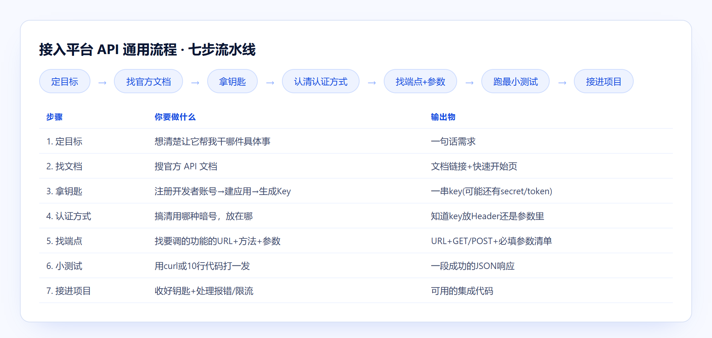

不管接哪个平台的 API，流程都是同一套七步——从"定目标"到"接进项目"，配平台速查表和状态码排错手册。
为什么做、怎么取舍、做完带来什么。
接 AI 大模型、交易所、聊天机器人……不同平台文档风格千差万别，但认证方式、报错排查的底层逻辑其实高度重复。把这套共性提炼出来，接新平台时不用每次从零摸索。
定目标→找文档→拿钥匙→认证方式→找端点→小测试→接进项目。铁律是"钥匙绝不写进代码"和"报错先看状态码"。附带平台速查表和排错手册，覆盖大模型/聊天机器人/交易所/数据/图像语音等常见平台。
现在接任何新平台，第一步就是走这套流程，不再凭感觉摸索认证方式，报错也能按状态码分类快速定位。
七步流水线 + 逻辑速记表。
